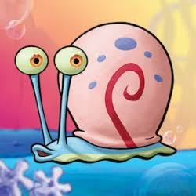
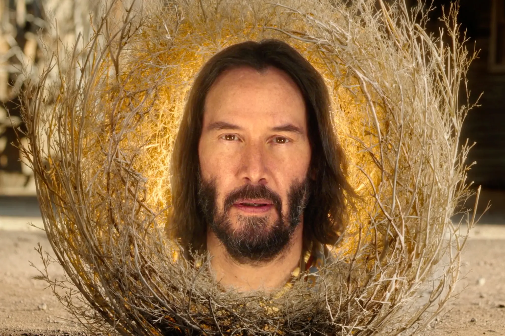

The SpongeBob Movie: Sponge on the Run is a 2020 live-action/computer-animated adventure comedy film. It's about SpongeBob and Patrick leaving Bikini Bottom on a high-stakes road trip to rescue his beloved pet snail Gary from the lost city of Atlantic City.

Image Source: Paramount Pictures / Nickelodeon Movies
When SpongeBob's beloved pet snail Gary is suddenly "snail-napped" by King Poseidon, SpongeBob and Patrick embark on a journey to the Lost City of Atlantic City to bring him home. Along the way, they navigate the dangers of the casino floor, meet a wise sage named Sage, and discover that the power of friendship is the greatest force of all.
Here are the key characters featured in this road-trip rescue mission:
An optimistic sea sponge who goes to the ends of the ocean to rescue his best friend and pet snail, Gary.
SpongeBob's loyal, goofy best friend who proudly joins the trek to Atlantic City, providing morale support and comedy.

SpongeBob's cherished pet snail whose slime is coveted by King Poseidon for its age-reversing skin-care qualities.

A literal, mystical tumbleweed with the face of Keanu Reeves who guides SpongeBob and Patrick through their trials of courage.
What makes the movie so special is seeing how deep their friendship is, especially during the heartwarming flashbacks to their childhood days at Kamp Koral. Along the way, things get weird when they cross paths with Sage, a literal, glowing tumbleweed played by Keanu Reeves. Keanu acts as their mystical mentor, guiding them through hilarious trials of courage and helping them realize that the power of friendship is the greatest force in the ocean.
Check out these links to find out more about the movie:
Official Paramount+ Movie Streaming Page
All about The SpongeBob Movie: Sponge on the Run on Wikipedia